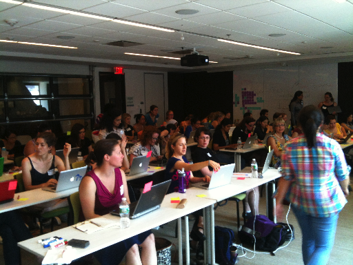

WiSE Bootcamp Roundup
It's been over a week since our first bootcamp for women in science and engineering wrapped up in Boston, and feedback has been coming in pretty steadily. In no particular order:
- Adina Chuang-Howe (one of the instructors) wrote a comprehensive summary of what happened and what we learned from it.
- Aleksandra Pawlik (another instructor) wrote about it for the Software Sustainability Institute's blog.
- Sally Gore posted about the "coulda woulda shoulda" of learning to program.
- Kaitlin Thaney (the newly appointed director of the Mozilla Science Lab) wrote about us eating our own dog food–this was her first bootcamp, and it's given her lots of ideas.
- Terri Yu wrote about follow-on activities right after the bootcamp, then posted some personal reflections a few days later.
Many thanks once again to everyone who worked so hard to pull it together, and to our sponsors for their support. We look forward to doing it again soon.
